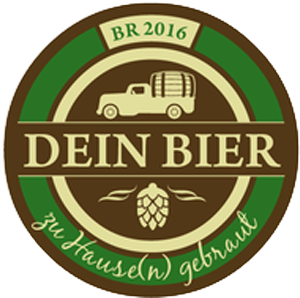
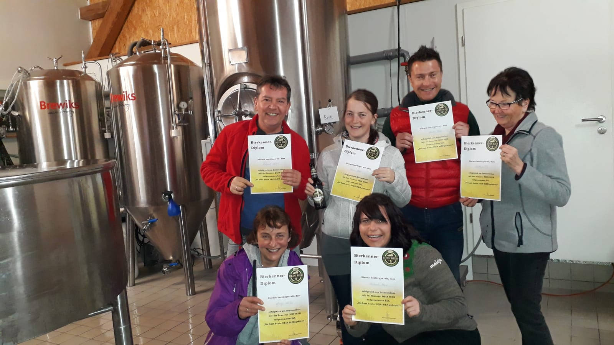

DEIN BIER
zu Hause(n) gebraut
Die Brauerei
kommt zu Euch.
Handwerklich gebrautes Bier aus Hausen im Ostallgäu.
Brauseminare · Verleih · Ferienwohnung

DEIN BIER
zu Hause(n) gebraut
Handwerklich gebrautes Bier aus Hausen im Ostallgäu.
Brauseminare · Verleih · Ferienwohnung
